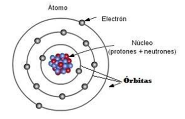
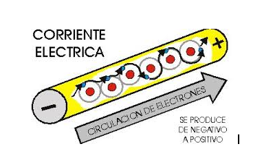

El átomo es el componente fundamental de toda la materia, es decir todo lo que existe en el universo físico conocido esta hecho de átomos. El átomo es la partícula mas pequeña de un elemento que conserva todas sus propiedades químicas.
Según el físico Danés Niels Borh (1885-1962), cada átomo tiene un núcleo central y alrededor de él giran a gran velocidad unas partículas (electrones) cargadas negativamente. Dentro del núcleo hay un número igual de partículas positivas (protones) que anulan las negativas de los electrones, compensándose el número de cargas positivas del núcleo con el número de cargas negativas que giran a su alrededor, resultando un átomo neutro. También se encuentran en el núcleo unas partículas sin carga eléctrica denominadas neutrones.
Como hemos indicado, el átomo en estado normal posee el mismo número de protones que de electrones, por lo que es eléctricamente neutro. Ahora bien, los electrones pueden ceder o ganar electrones, quedándose cargados positiva o negativamente.
Un átomo estará cargado positivamente si pierde un determinado número de electrones.
Un átomo estará cargado negativamente si gana un determinado número de electrones.
En algunos materiales, especialmente los metales y bajo ciertas condiciones, los electrones son libres de moverse de un átomo a otro originando un flujo de electrones a través del material. Este flujo de electrones se conoce como corriente eléctrica.
Los materiales que permiten el flujo de electrones se denominan conductores. Es decir, permiten el flujo de la corriente eléctrica.
El Cobre, la plata y el aluminio.
Los materiales que por su estructura no permiten fluir a los electrones se denominan aislantes. Dicho de otro modo, no permiten el flujo de la corriente eléctrica.
El vidrio, la madera, y el plástico.